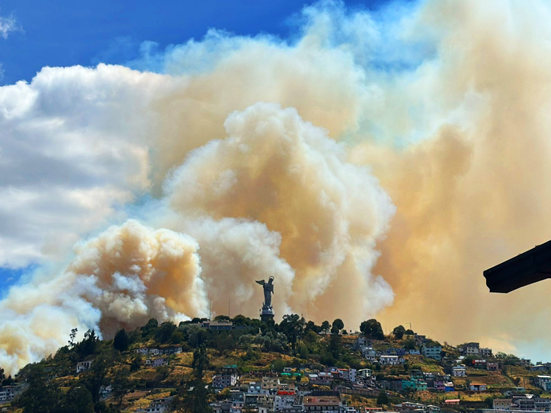

Protección del Suelo
En Ecuador, la pérdida de fertilidad afecta al 40% de los cultivos. Prácticas como la rotación de cultivos y la aplicación de abonos orgánicos son esenciales para regenerar la tierra.

Conservación de Polinizadores
La deforestación y el uso de pesticidas han reducido las poblaciones de abejas. Programas de apicultura sostenible están ayudando a proteger estos polinizadores esenciales.

Prevención de Incendios
En 2024, más de 25,000 hectáreas fueron destruidas por incendios en áreas rurales. Programas de reforestación y manejo sostenible ayudan a prevenir futuros desastres.